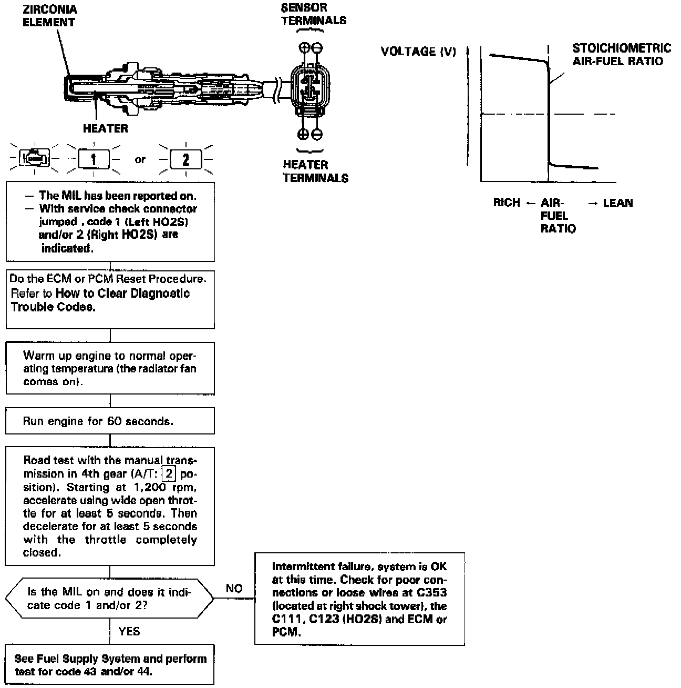

Operation CHARM
: Car repair manuals for everyone.
Home
>>
Acura
>>
1995
>>
Legend Coupe V6-3206cc 3.2L SOHC FI
>>
Repair and Diagnosis
>>
A L L Diagnostic Trouble Codes ( DTC )
>>
Testing and Inspection
>>
Manufacturer Code Charts
>>
Engine Control System
>>
DTC 1
DTC 1

The Malfunction Indicator Lamp (MIL) indicates Diagnostic Trouble Code (DTC) 1: A problem in the Left Heated Oxygen Sensor (HO2S) circuit.